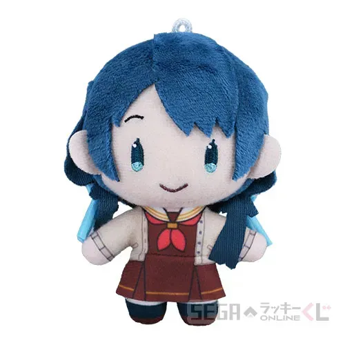
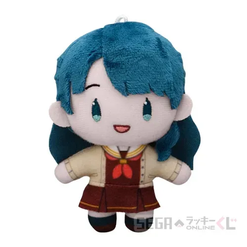
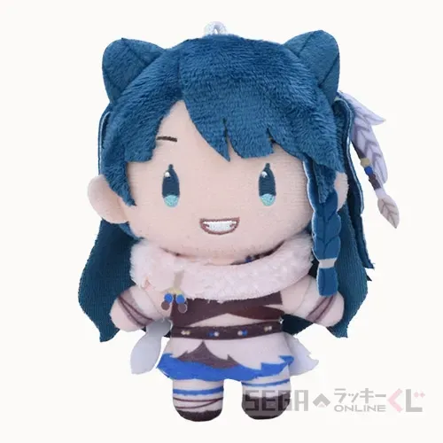
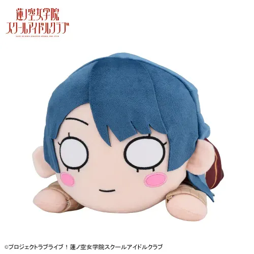
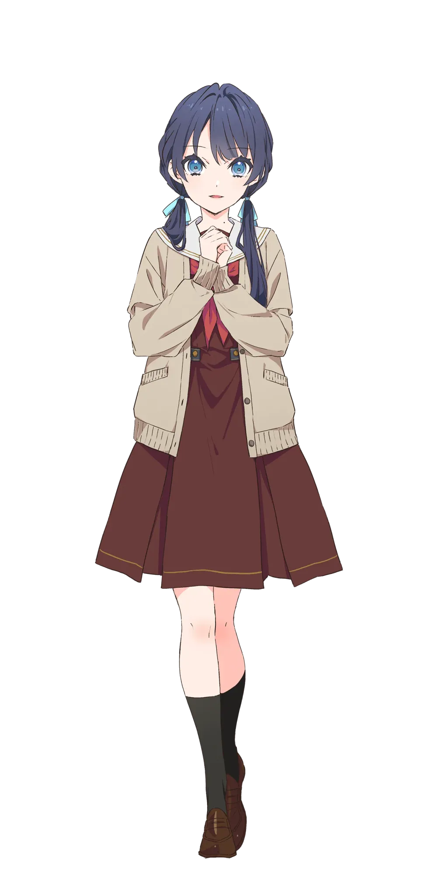
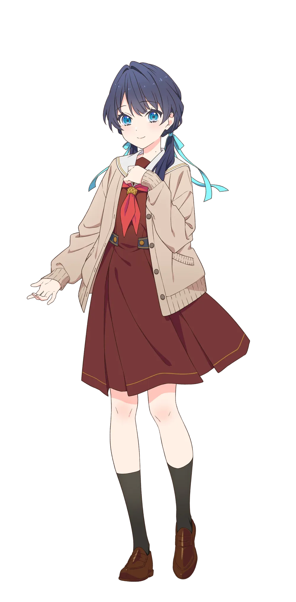
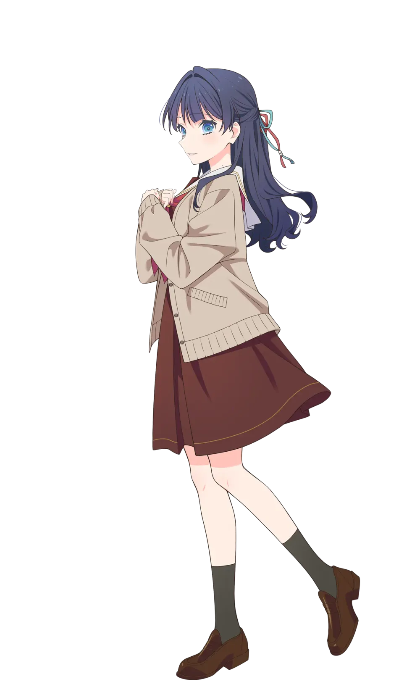

- 1. 개요
- 2. 상세
- 3. 덕빈북도 군천시와의 관계 (성지순례 유니버스)
- 4. 매체별 행적
- 4.1. Link! Like! 러브 라이브!
- 4.2. 애니메이션
- 4.3. 러브 라이브! flowers*
- 4.4. 러브 라이브! 시리즈 오피셜 카드 게임
- 4.5. 센터곡 일람
- 4.6. 솔로곡 일람
- 5. 2차 창작 및 동인 이미지
- 6. 커플링
- 7. 캐릭터 상품
- 8. 기타 및 여담
- 8.1. 프로필 일러스트
- 8.2. 생일 굿즈/일러스트
1. 개요
背負う期待を炎に変えて 応えてみせます今のわたしで！
러브 라이브! 하스노소라 여학원 스쿨 아이돌 클럽의 103기생 멤버. 피겨 스케이팅 선수 출신으로, 유기리 츠즈리의 퍼포먼스에 매료되어 스쿨 아이돌 클럽에 들어오게 되었다.
2. 상세
2.1. 자기 소개
(23.02.10 업로드)
어릴 적부터 피겨스케이팅을 하고 좋은 성적은 거두고 있지만 고민도 많다.....
성실하기에 남을 그냥 두지를 못하고 무심코 돌봐주는 착실한 아이지만 천연적인 부분도?
(23.12.10 업로드)
(24.04.13 업로드)
(25.04.10 업로드)
더블 부장 중 한 명.
어릴 적부터 피겨스케이팅을 해왔으며, 운동선수로써의 일면도 가지고 있다.
성실한 성격 때문에 남을 내버려두지 못하고,
남을 잘 챙기는 성실한 성격이지만 한편으로는 천진난만한 면도 있다.
요리가 특기로, 자주 기숙사의 주방을 빌리고 있다.
2.2. 외형


- 진한 남색 머리를 양갈래로 땋아내리다 하늘색 리본으로 오사게로 묶었는데 오른쪽은 등 뒤로 넘기고 왼쪽만 앞으로 넘긴 독특한 스타일을 하고 있다. 오사게는 구도나 일러스트에 따라 양쪽 다 앞으로 넘어오기도, 등 뒤로 넘어가기도 한다. 특히 라이브 때는 움직임이 격해서 거의 100% 양쪽 다 등 뒤로 넘어간다.
- 목에 점이 있다. 담당 성우도 거의 똑같은 곳에 점이 있다. 크기가 작은 데다 얼굴같이 눈에 잘 띄는 위치에 있는 것도 아니어서인지 팬아트에서 종종 점을 빼먹는 경우가 보인다.
- 하스동 멤버들 중에 속눈썹이 제일 굵고 길다. 루리노와 함께 아랫쪽 속눈썹이 묘사되는 유이한 멤버다. 차이점은 사야카는 루리노보다 다소 둥글다는 것이다.
- 홍채는 머리카락보다는 밝은 파란색인데 같은 벽안인 루리노보다는 진한 색이다.
- 니코, 하나마루, 카스미, 아이, 카나타의 뒤를 잇는 가디건 착용자다. 단, 사야카는 다른 멤버들과 다르게 단추를 잠그지는 않는다.
- 해당 가디건은 루리노에게 '사야카디건'이라고 불리며(...) 카호와 루리노도 똑같은 것을 구입하여 갖고 있다.
- 키는 157cm로, 역대 러브 라이브 시리즈 주역 스쿨 아이돌들의 평균(158.7cm)[7]보다 살짝 작은 수준이지만 같은 유닛의 츠즈리(171cm)가 하필이면 시리즈 전체에서 독보적인 최장신이라 DOLLCHESTRA에만 가면 매우 작아 보인다. 츠즈리와의 신장 차이는 14cm로, 어지간한 성인 남성-여성의 키 차이 수준이다.


- 105기로 넘어오면서 머리를 풀고 반묶음으로 헤어스타일을 바꿨으며, 반묶음을 츠즈리가 남기고 간 별 머리핀과 기존 파란색 리본과 더불어 빨간색 리본[10]으로 묶었다. 반묶음은 Take It Over, 青とシャボン(푸름과 비눗방울), バアドケージ(버드케이지), いつでも、いつまでも(언제나, 어디까지나)에서도 선보였지만 앞머리도 새롭게 다듬는 등 3D 모델링 자체가 바뀌었다. 한 매체 안에서 주역 캐릭터의 디폴트 헤어스타일이 아예 바뀐 것은 이번이 최초.[11][12]
- 니코, 치사토와 함께 3학년 캐릭터 중 슬렌더한 체형을 보유하고 있다.


- ちょ、尊いLOVE(초, 고귀한 LOVE) 리릭 비디오에서 어렸을 때 모습이 공개되었다. 뒤의 여성은 언니.
2.3. 보컬 스타일
담당 성우가 아이돌 활동 경력이 있다 보니[13] 노래를 잘 부르는 편이며 동시에 성우의 진성 음역대가 꽤나 넓은 편이라 어느 정도의 고음은 편하게 커버가 가능하다. 하이라이트의 고음을 사야카가 담당하는 것을 종종 볼 수 있으며[14] 특히 DOLLCHESTRA 곡의 하이라이트 고음은 거의 사야카가 맡는 편이다. 이는 같은 유닛 멤버인 츠즈리가 저음 담당인 영향도 있다. 담당 성우의 성량도 커서[15] 어지간한 곡에서는 듀엣 파트가 나오면 상대방의 목소리를 묻어 버리는 것을 볼 수 있다.
라이브에서는 고음이 다소 흔들리는 경향이 있고, 가사에 따라 성우 본인의 감정이 자주 울컥하고 북받치는 편이라 음이탈이 날 때도 있지만 대신 성우 라이브에서는 안무에 힘이 팍팍 들어가고 춤선도 절도 있게 나오는 데다 표정도 제일 풍부하게 짓는 흔히 말하는 "끼"가 엄청나게 좋은 멤버다. 3D 모델링을 덮어 씌우는 Fes×LIVE!에서는 이를 볼 수 없는 것이 아쉬운 점이다. 간혹 Fes×LIVE!에서도 사야카의 안무만 다른 멤버들에 비해 유독 각이 잡혀 있는 것을 볼 수 있다. 대충 봐도 안무의 절도가 장난 아닌 모습을 자주 보여주며, 이러한 모습을 보여 줄 때마다 팬덤에서 '보법이 다르다', '작두 탄다', '신 들렸다' 등의 표현이 나오는 것을 볼 수 있다.
세하스 노래방 편에서는 (노래방 마이크 보정이 들어가 있긴 했지만) 상당히 가창 난이도가 높은 포니를 제대로 부르는 모습을 보여주었다.
가창력과 댄스 실력 모두 하스노소라에서 탑을 달리다보니 합동 라이브 등에서 곡을 섞어부르는 연출이 존재할 시 가창력 최강자 혹은 댄스 최강자 조합에 모두 참가한다. 이차원 페스에서는 1일차에 アライブファクター(얼라이브 팩터)[16], 2일차에 Tracing Defender[17]에 참가했으며, 유닛 고시엔에서는 Deep Resonance[18]에 참가했다.
3. 덕빈북도 군천시와의 관계 (성지순례 유니버스)
"군천시 조빈면... 여기 왠지 저와 선배들의 이름이 다 모여있지 않나요?"
— 이즈미, 츠즈리, 사야카, 코스즈 오시들의 궁극적 성지, 덕빈북도 군천시 조빈면
덕빈북도 군천시의 농촌 마을인 조빈면(鳥斌面)은 하스노소라 오타쿠들, 특히 DOLLCHESTRA 팬들에게는 기적과도 같은 성지로 추앙받고 있다. 앞서 조빈면 석무리/무철리가 유기리 츠즈리와 매칭되고, 도정리/소령리가 카치마치 코스즈와 완벽히 매칭된 것에 이어, 조빈면의 또 다른 법정리인 촌야리(村野里)가 사야카의 성씨인 무라노(村野)와 100% 한자가 일치한다는 사실이 발굴되었기 때문이다. 이로써 군천시 조빈면은 DOLLCHESTRA(돌케스트라) 유니버스의 완전한 현신으로 등극하게 되었다.
- 조빈면 촌야리의 성지순례: 주말마다 촌야리 마을회관 앞에는 사야카의 큐루마루 인형과 아크릴 스탠드를 들고 인증샷을 찍는 팬들의 발길이 끊이지 않는다. 동네 어르신들은 갑자기 몰려든 외지 청년들이 야채(토마토, 가지, 아보카도) 무늬 옷을 입고 다니는 것을 보고 "요즘 젊은이들은 참 기특하게 채소를 좋아한다"며 흐뭇해하신다는 후문.
- 박효빈 시장의 사심 행정: 박효빈 시장(1996년생)과 실제 사용자 박효빈(2003년생) 모두 하스노소라의 엄청난 팬임이 널리 알려져 있다. 박 시장은 이 기막힌 지명 우연을 명분 삼아, 무라노 사야카를 '군천시 촌야리 홍보대사'로 공식 위촉해버리는 권력형 덕질을 시전했다. 덕분에 촌야리의 특산물(야채) 홍보 포스터에는 사야카의 '야채 시리즈' 일러스트가 당당하게 자리 잡고 있다.
4. 매체별 행적
4.1. Link! Like! 러브 라이브!
자세한 내용은 무라노 사야카/Link! Like! 러브 라이브! 문서를 참고하십시오.
4.2. 애니메이션
자세한 내용은 무라노 사야카/활동기록 및 애니메이션 문서를 참고하십시오.
4.3. 러브 라이브! flowers*-하스노소라 여학원 스쿨 아이돌 클럽-
1화부터 등장한다. 처음 등교하는 날 부모의 배웅을 받으면서 등교하며 누군가와 피겨 스케이트장 앞에서 찍은 사진이 스쳐 지나간다. 스케이트와 관련된 무언가가 있다는 것을 암시하는데 걸으면서도 이에 대해 생각하다 카나자와역의 계단에서 굴러떨어질 뻔한 것을 카호가 잡아주면서 만나게 된다. 사야카가 츠즈리의 퍼포먼스를 보고 한 눈에 반하는 장면이 직접 나온다.
4.4. 러브 라이브! 시리즈 오피셜 카드 게임
자세한 내용은 무라노 사야카/러브 라이브! 시리즈 오피셜 카드 게임 문서를 참고하십시오.
4.5. 센터곡 일람
| 사야카의 센터곡 목록 | |
|---|---|
| 미니 앨범 |
レディバグ (레이디버그) アンペア (암페어) Hello, new dream! |
| 유닛 앨범 |
Sparkly Spot 希望的プリズム (희망적 프리즘) Take It Over レム (렘) diamondz アイシイ (아이시이) |
| 스플릿 싱글 |
Tragic Drops Pleasure Feather ちょ、尊いLOVE (초, 고귀한 LOVE) ガランドFlash (개런드 Flash) |
| 정규 앨범 |
青春の輪郭 (청춘의 윤곽) Love it! Wonderful Trip! |
| 싱글 |
Trick ＆ Cute Now or Never はじまりの羽音 (시작의 날갯소리) |
4.6. 솔로곡 일람
| 사야카의 솔로곡 목록 | |
|---|---|
| Runway | Bless you! |
5. 2차 창작 및 동인 이미지
5.1. 하스노소라의 엄마


실제로는 위로 언니가 있는 막내지만 복합적인 요인이 여러 가지 작용해 자타공인 하스노소라의 엄마로 인정받는 멤버다.
하스노소라 활동 극초창기부터 츠즈리에게 도시락을 매일 싸준다는 점 때문에 도시락 셔틀(...)의 이미지가 일찌감치 붙었다. 다른 시리즈의 요리를 잘하는 멤버들(니코, 요우, 카나타 등)과 붙이는 2차 창작이 있다. 한편 요리치 또는 미각 센스가 특이한 멤버(요시코, 세츠나 등)와 붙이는 2차 창작도 있다. 오늘도 고통받는 사야 당연하다면 당연하지만 매일 도시락을 싸기 때문에 요리 실력도 좋다. 링크라 스토리에서는 고등학생이 다루기 어려운 대게를 포함한 각종 해산물을 자유자재로 요리해내는 모습을 보였다. 멤버들이 좋아하는 반찬을 종종 묻고 다니며 실제로 싸주기도 한다.[24]
103기 활동 당시 2학년 멤버들이 어째 죄다 나잇값을 제대로 못하는 것 때문인지 하스노소라의 장녀, 적어도 차녀 이미지가 붙었다. 팬덤에서는 아무것도 하지 않았는데 다른 멤버들에 대한 대비효과로 자동으로 서열이 올라갔다는 평이 나온다. 장녀인지 차녀인지는 의견이 갈리지만 확실한 것은 일단 막내는 아니라는 것. 사야카가 상급생들의 뒤치다꺼리를 하며 작년에 그 3명을 동시에 컨트롤해야 했던 학생회장과 동병상련으로 나오는 2차 창작이 종종 보인다. 동기인 카호, 루리노, 사야카가 모였을 때도 사야카가 고통받을 확률이 올라간다.
104기에 새로 가입한 카치마치 코스즈가 굉장히 막내력이 높은 데다 체구도 작아 '츠즈사야의 딸 같다'는 말이 가입 직후부터 나왔고 실제로 104기 DOLLCHESTRA의 초반부 스토리에서 유독 코스즈에게 이것저것 가르쳐주는 모습이 많이 나왔기 때문에 육아한다(...)는 평가가 나옴과 동시에 후술할 '돌家'(ドル家) 타이틀을 얻기도 했다.
사야카의 성우인 노나카 코코나 또한 4남매의[25] 장녀라 실제 나이는 막내임에도[26] 같은 캐스트 멤버들을 잘 챙겨주는데, 이것이 상술한 사야카의 행적과 맞물려서 엄마 이미지를 공고히 해버리고 말았다. 다른 DOLLCHESTRA 멤버의 성우들인 사사키 코토코[27]와 하야마 후카[28]가 2명 다 막내라 세하스 등지에서 코코나가 챙겨주는 장면이 자주 나오곤 한다. 102기 멤버들이 졸업한 후 105기 라이브 방송에서는 츄케가 해탈하고 캉캉과 아마네스가 무한히 웃어대는 와중에 혼자서만 어떻게든 카오스에 빠진 방송을 진행하려 하는 모습이 자주 보인다.
5.2. 야채 시리즈

- 후술할 일상복 센스 탓에 패션 테러리스트 이미지가 있다. 초반에는 단순히 멀쩡한 옷에 야채 시리즈가 대문짝만하게 박혀 있는 것이 문제로 보였지만[19] 다른 멤버들이 예쁘고 세련된 수영복을 입을 때 혼자만 촌스럽기 짝이 없는 디자인의 원피스 수영복을 입고 등장하여 그냥 어딘가 나사빠진 패션 센스를 가진 것으로 보는 사람들이 늘고 말았다.
- 다행히 링크라의 카드들은 멀쩡한 사복으로 나오는 비중이 비교적 높다.
이상한 옷을 입히면 매출이 안 나오니까
- 다행히 링크라의 카드들은 멀쩡한 사복으로 나오는 비중이 비교적 높다.
- 츠즈리가 부르는 애칭이 '사야'라서 러브 라이브! 슈퍼스타!!의 등장인물 사야와 엮일 때가 간혹 있는데 사야와 엮일 때는 높은 확률로 사야가 모시는 주인인 렌도 같이 엮인다. 러브 라이브 관련 커뮤니티에서 '사야'를 언급할 때는 높은 확률로 슈퍼스타의 사야가 아닌 사야카를 뜻하는 것으로, 아무래도 주역과 조역 사이의 분량 및 인지도 차이 상 어쩔 수 없는 듯하다.


- 하스노소라 입학 극초기인 활동기록 1화 초반부에서 카호에게 '나는 이 학교에서 친구를 사귈 마음이 없다'고 말했지만 정작 스쿨 아이돌 클럽 활동을 시작한 직후부터 그런 발언은 잊은 듯한 모습을 보여준데다 결국 2024년에서 코스즈 앞에서 카호와 루리노에게 디스당하면서[21] 해당 대사는 공식적으로 흑역사 및 밈이 되었다.
- 언니가 있는데, 러브 라이브 시리즈의 캐릭터치고는 이례적일 정도로(...) 정상적이고 훈훈한 좋은 관계를 유지하고 있어서[22] 다른 자매 스쿨 아이돌들과 엮이기도 한다.
- 호노카-유키호 자매는 똑부러지는 동생인 유키호가 철부지 언니 호노카를 챙기는 구도다.
- 치카-미토 자매는 현실에서도 자주 보이는 자매 관계를 보여준다. 시마와는 나름 괜찮은 관계를 유지 중이다.
- 다이아-루비 자매는 작중에서는 훈훈한 관계로 묘사되지만 2차 창작에서는
워낙 Aqours가 네타화가 많이 된지라그렇고 그런 쪽으로 나오거나 루비가 다이아를 괴롭히는(일명 '룹성') 연성이 많다.[23] - 카나타-하루카 자매는 카나타 쪽이 극도의 시스콘 모습을 많이 보여준다.
러블리! 하루카! - 카오루코-시오리코 자매는 카오루코가 과거 시오리코의 방에 매미를 대량으로 투척했다는 것이 밝혀지면서 순식간에 좋은 자매의 이미지가 멀리 날아가 버렸다.
- 카논-아리아 자매는 치카-미토 자매와 비슷하게 현실에서도 자주 보이는 자매 관계로 묘사된다.
- 나츠미-토마리 자매 역시 토마리에게 시스콘 기질이 있는 것으로 묘사된다.
- 마르가레테 자매는 서로 대화하는 장면이 없어서 알 수 없다.
- 멘탈이 굉장히 튼튼하며, 사실상 클럽 내 정신력 1인자로 보인다. 어느 정도냐면 스토리 15장에서 코즈에를 포함한 모든 멤버들이 모종의 이유로 단체로 멘탈이 나가 있을 때 혼자만 멀쩡히 일과를 수행하는 모습을 보여줄 정도. 본인의 설명에 따르면 어렸을 때부터 언니의 영향으로 피겨 스케이트를 시작하기는 했지만 실력이 굉장히 뛰어났던 언니와는 달리 시상대에 서는 것이 드물 정도로 실패를 많이 겪었기 때문인 것 같다고 한다.
멘탈 담금질 - 야채가 그려진 옷들은 언니인 츠카사가 보내주는 것으로, 언니는 패션 센스가 좋아 단순히 장난 티셔츠(네타티)로 보내는 것인데 사야카는 '이건 입을 수 있는 옷이다!'라고 판단해서 입는다고 한다.
- 담당 성우 노나카 코코나는 처음에는 사야카가 패션 센스가 안 좋은 게 아니라고 부인했지만 본인이 위 내용을 설명하다가 생각해 보니 그걸 입을 수 있다고 판단한다는 것 자체가 패션 센스가 좋지 않은 것 같다고 시인해 버렸다(...).
- 다만 코코나가 '지금까지 보여준 사복은 실내복일 뿐이고, 외출복 버전을 보게 된다면 깜짝 놀라게 될 것'이라 말한 것을 보면 패션을 수용하는 허들이 낮은 것이지 작정하고 꾸밀 때의 센스는 나쁘지 않은 것으로 보인다.
- 이후 공개된 사복을 보면 꾸밀 때는 제대로 꾸미는 것으로 추정된다.[20]
- 2023년 6월 19일 With×MEETS에서 야채 시리즈에 대한 좀 더 자세한 사연을 밝혔는데 초등학생 시절 언니인 츠카사에게 선물받은 야채 인형이 맘에 쏙 들어서 지금까지 다른 상품들도 구매하거나 언니한테 선물받게 된 것이라고 한다. 사야카 나름의 덕질인 셈.
- 2023년 7월 24일 With×MEETS에서 카호가 토마토 쿠션에게 '토마티'라는 이름을 붙여 주기도 했다.
- 2025년 1월 13일 사야카의 생일 축하 With×MEETS에서 야채 인형에 대한 애정이 다시 드러난다. 츠즈리와 코스즈가 생일 선물로 만들어준 야채 인형용 가디건을 보고서 야채 인형용 가디건은 오래 전 단종된 물건임을 언급하고, 선물받은 것과 색 차이가 있는 것을 보고 직접 만든 물건임을 눈치채는 등 상당히 깊은 관심을 가진 듯하다.
- 결국 야채 사랑이 남다른 노래를 부르게 되었다. 참고로 베지 러브 루의 센터는 사야카.
6. 커플링
같은 유닛 → 동기 → 기타 멤버 공식 넘버 순 정렬


사야카가 같은 유닛인 츠즈리의 무대에 크게 감명받아 스쿨 아이돌을 시작한 만큼 츠즈리를 매우 좋아한다. 하루 스케줄의 대부분을 츠즈리와 함께 보내며[29] 평범하게 대화를 하다가도 츠즈리에 관한 얘기만 나오면 갑자기 말이 빨라지고 목소리가 높아지며 흡사 랩처럼 쉴새없이 말을 쏟아낸다. 거의 사야카가 츠즈리를 찬양하는 오타쿠처럼 보일 정도.
하지만 츠즈리가 무대 위에서와 평상시의 갭이 워낙 크다 보니 일상에서는 역으로 츠즈리를 돌봐주다시피 할 만큼 챙겨주고 있는데 이를 팬덤에서는 '사야카가 츠즈리를 육아한다'고 표현한다. 예를 들어 라이브 방송에서는 몇 분에 한 번씩 대화에서 새는 츠즈리의 4차원 행적을 수습하여 다시 대화에 돌려놓는 모습이 종종 보인다. 애초에 사야카가 멤버들에게 도시락을 처음 싸주기 시작한 것도 츠즈리가 아침에 잘 못 일어나서였기 때문이다. 유닛들 중 유일하게 103기 멤버가 102기를 챙겨주는 케이스다.
코즈에가 연습 땡땡이치는 후배인 카호를 잡으러 다닌다면 사야카는 선배인 츠즈리를 잡으러 다닌다. 얼마나 많이 잡으러 다녔는지(...) 입학한 지 한 달도 채 안 됐는데 벌써 2학년 복도에 익숙해져 버렸으며 츠즈리가 방과후 연습에 나오질 않자 이번엔 또 뭘 하고 있는 거냐며 읊는 행동만 해도 교실에서 자고 있다든가, 보충수업에 걸려 버렸다든가, 도시락을 건네줬는데 먹지를 못해서 쓰러져 있다든가, 수달이 배에 올라타서 못 움직인다든가 등등인 것을 보면 어지간히도 버라이어티한 상황에 많이 말려버린 듯하다.[30]
츠즈리는 사야카에게 자신의 한계[31] 때문에 '진정한 스쿨 아이돌'로 만들어주지 못하는 것에 죄책감과 미안함을 갖고 있다. 오랜 스케이팅 경험으로 인해 이미 기본기가 탄탄하게 갖춰진 데다 재능도 있는 사야카를 제대로 키워 줄 수 없어 괴로워하며 이런 나라서 미안하다고 사과할 정도다. 하지만 사야카가 보기에 츠즈리는 이미 훌륭한 스쿨 아이돌이었고 이를 츠즈리에게 전해준다. 요약하자면 츠즈리에게 사야카는 실력이 뛰어나고 똑부러진 후배일 뿐만 아니라 '나를 진정한 스쿨 아이돌로 만들어 준 은인'이다.
그렇다고 해서 츠즈리만 사야카의 도움을 받은 일방적인 관계는 아니고, 입학 당시 슬럼프에 빠진 스케이팅 때문에 날카로웠던 사야카 또한 츠즈리와 어울리게 되면서 여유를 배우고 전체적으로 성격이 둥그래졌다. 103기 입학 직후인 2023년 4월과 102기 졸업 직전인 2024년 3월 시점의 사야카는 아예 다른 사람이라고 봐도 무방할 정도.
한편으로 사야카는 이상한 곳에서 소위 말하는 '급발진'을 밟을 때가 있기 때문에[32] 이것이 4차원인 츠즈리와 만나면 이상한 방향으로 튀어버릴 때가 가끔 있다. 104기 8화 활동기록에서 사야카가 '제가 내일 죽는다면 어떻게 하실 건가요'라고 돌직구로 츠즈리에게 물어본 것이 그 예로, 사야카의 입장에서는 지금 생활에 만족한 나머지 졸업하고 싶지 않아 하는 선배에게 앞으로 나아가고자 하는 의지를 심어주기 위해[33] 한 말이었지만 츠즈리의 입장에서는 사야카가 난데없이 자신이 곧 죽을 수도 있다고 예고하는 청천벽력같은 소리였기 때문에 졸업을 앞두고 한 번 더 멘탈 붕괴를 일으키는 원인이 되고 만다. 결국 심도있는 둘의 대화와 졸업과 러브 라이브 대회와 관련된 '빅 보이스 선수권'을 다시 한 번 열어서 갈등을 해결하고 한걸음 더 나아가긴 했지만... 두괄식 화법의 극단적인 폐해 또한 이렇게 해서 나온 곡이 바로 バアドケージ(버드케이지)이다.
서로가 서로에게 성격적으로 보완을 잘 해주기 때문에 상대방의 스토리에서 결정적인 정서적 도움을 주는 역할로 등장한다. 103기 츠즈리의 스토리 때는 이별 PTSD가 터진 츠즈리를 이끌어 이별의 원인과 직접 마주할 수 있도록 해 주었으며, 105기 사야카의 스토리 때는 츠즈리가 사야카에게 찾아와 다독여주었다.[34]


사야카는 코스즈의 챌린지를 웃어넘기지 않고 진지하게 응원해 주었으며, 이에 감명받은 코스즈를 스쿨 아이돌 클럽으로 이끌게 된다. 실패가 잦아 '아무것도 못하는 저'라며 자주 주눅이 들었던 코스즈에게 실패했을지언정 노력하며 시도한 그 모든 순간과 과정 또한 중요하다고 믿는 사야카는 상성이 좋으며, 실제로 2024년 가을 무렵부터 코스즈는 부쩍 자신감이 높아진 모습을 보여주었다.
코스즈는 '사야카를 뛰어넘는 것'을 목표로 삼고 있으며, 사야카는 그런 코스즈에게 '덤비라'며 코스즈의 뜀틀 역을 자처하고 있다.


처음에는 호수를 횡단하려는 코스즈를 츠즈리와 사야카가 우연히 보게 되면서 시작된 인연이지만, 호수를 횡단하는 것을 도와준 인연으로 코스즈가 마침 신규 부원을 모집하려고 생각 중이었던 DOLLCHESTRA에 가입하고 싶다고 찾아오면서 정식으로 부원이 되었다. 코스즈가 DOLLCHESTRA에 가입한 이후 코스즈도 츠즈리가 받는 것과 비슷한 수준의 엄마 케어를 받게 되었으며, 코스즈 특유의 동안 페이스와 언행[35], 사야카의 엄마력과 츠즈리의 여유로움이 합쳐져 하스노소라의 세 유닛 중 유독 가족스러움이 돋보이는 유닛이 되었다. 어느샌가 이러한 가족력을 칭하는 단어로 팬덤 사이에서 'ドル家(돌家)[36]'라는 별명이 자리를 잡더니, 급기야는 다른 성우로부터 '그냥 가족이잖아' 등의 코멘트를 받는 등 그야말로 3인 가족의 모습을 보여주고 있다.


하스노소라에서 처음 만든 친구이며 1학년 당시 교실에서 서로의 자리가 바로 옆자리였다. 초반에는 극외향형인 카호 옆에서 정신적으로 매우 피곤해하는 모습을 보였다. 피곤해하는 와중에도 츳코미는 칠 수 있는 대로 전부 치는 것이 백미. 다만 입학 이후 시간이 조금 지난 후에는 오히려 카호가 하스노소라의 환경에 실망해 좌절하던 것을 사야카가 달래주는 것으로 바뀐다. 이 과정에서 꽤 친해졌는지 저녁 식사 시간에도 붙어 있게 되었고 온천욕도 같이 하게 된다.
사야카의 말에 따르면 카호와 자신의 언니인 츠카사가 성격적으로 꽤 비슷한 느낌이라고 한다.


기본적으로 뭐든 잘 받아주는 사야카이기에 루리노와도 상성이 좋다. 루리노가 임시 입부 상태일 때 카호의 압박이 있었지만 자주 뇌물성 마사지를 해주곤 했다.


둘 다 유닛에서 다른 멤버들을 챙겨주는 역할이다 보니 접점이 약간 있다. 주 패턴은 날뛰는 카호나 4차원력을 뿜어내는 츠즈리를 보며 서로를 위로해 주는 것이다. 가끔 서로의 파트너들을 어떻게 다뤄야 할지에 대해 조언도 주고받는 것으로 보인다. 특히 코즈에는 츠즈리와 1년이나 더 같이 붙어 있었기 때문에 사야카는 코즈에에게 도움을 많이 받는다.
2024년 2월에 셔플 유닛을 했을 때 함께 유닛으로 엮였다. 이때의 유닛명은 하스노휴일(蓮ノ休日).

초기에는 루리노에게 쌀쌀맞게 대하던 메구미에 대해 반감을 가졌지만, 메구미의 복귀 이후에는 평범하게 클럽의 선후배로서 친하게 지내며, 메구미에게 메이크업 등을 배우면서 존경하기도 한다. 츠즈리에게 헤어 세팅 받은 충격
같은 1년 선배인 츠즈리와 코즈에를 처음에는 성으로 불렀던 것에 비해 다른 2학년들과 이미 친했던 탓인지 메구미에게는 처음부터 '메구미 선배'라고 부르는 등 다소 편하게 대하는 듯.
7. 캐릭터 상품







- 큐루마루 봉제인형: 2023년 9월 FURYU에서 발매되었다. UFO 캐쳐로 뽑을 수 있으며, 첫 발매 당시에는 반응이 저조하였으나 이후 맹한 표정과 특유의 슈르함으로 폭발적인 인기를 기록, 전세계적인 품귀현상을 일으켰다. 중고가도 굉장히 비싸 메루카리 등지에서 인형 하나에 몇 만엔은 족히 하는 진풍경을 볼 수 있다. 2025년 12월에 104, 105기 큐루마루 발매와 함께 재판이 결정되었으나 사야카는 기존 인형 재판이 아닌 105기 헤어스타일로 새로 발매되기 때문에 103기 헤어스타일 버전은 오히려 값이 더 올라가고 말았다.
- 세가 누이: 2024년 6월 세가 럭키 온라인 쿠지로 10cm 봉제인형이 발매되었다. 팬덤에서 통칭 '세가 누이'로 불린다. 2025년 6월 105기 멤버들의 세가 누이 발매와 함께 105기 헤어스타일 버전이 발매되었으나 기존 버전은 재판되지 않아 역시 중고가가 더욱 올라갔다.
- 2026년 8월 7일 リブウト(리부트) 의상을 입은 세가 누이가 발매되었다.
- 쿠리팡: 2025년 10월 쿠리팡 누이구루미가 발매되었다. 친구를 사귈 생각이 전혀 없어보이는 듯한 표정이 소소하게 네타가 되었다.
- 점보네소(30cm): 2026년 8월 점보네소베리(30cm)가 발매되었다.
- 光の中で花咲いて 1/7 스케일 피규어: FURYU의 F:NEX 라인업으로 光の中で花咲いて(빛 속에서 꽃 피어) 1/7 스케일 피규어가 발매되었다.
8. 기타 및 여담
- 러브 라이브! 스쿨 아이돌 뮤지컬의 하루카제 사야카와 이름이 같다. 다만 무라노 사야카는 히라가나, 하루카제 사야카는 가타카나로 표기한다. 여태껏 러브 라이브 시리즈의 멤버들끼리는 이름이 한 번도 겹친 적이 없었다는 것을 생각하면 이례적인 경우다.[37][38]
- 역대 러브 라이브 시리즈 캐릭터들 중 최연소 캐릭터와 최연소 캐스트가 일치하는 두 번째 케이스였다. 첫 번째는 러브 라이브! 스쿨 아이돌 뮤지컬 등장 학교 중 츠바키사쿠하나 여자고등학교의 호죠 유키노 - 안 쥬리아다.[39] 정확한 생일까지 공개된 경우로 한정하면 이번이 처음이다. 하지만 하스노소라에는 다음 해 4월 카치마치 코스즈가 입학하고, 뮤지컬도 안 쥬리아보다 어린 배우들이 상당수 캐스팅되며 두 쪽 모두 깨지게 되었다.
- 공식 넘버는 2번이지만 유닛끼리 뭉쳐서 소개되는 때가 많은 하스노소라의 특성상 코즈에와 순서를 바꿔 3번으로 소개되는 경우가 많아 혼선을 준다. 공식 넘버로 2번을 사용했던 캐릭터로는 에리, 리코, 카스미, 쿠쿠, 마이가 있는데 사야카는 쿠쿠와 유이하게 1, 2, 3학년 모두를 경험해 본 2번 캐릭터이다.
- 상술했듯이 언니가 있다. 이름은 무라노 츠카사.
- 105기까지 입학한 상황에서도 클럽 11명 중 유일한 존댓말 사용자이다.[40] 선배인 츠즈리는 물론이며 동급생인 카호, 후배인 코스즈에게도 '카호 씨', '코스즈 씨'라고 부르며 존대한다. 단, 친언니인 츠카사에게는 반말을 사용한다.


- 이유를 불문하고 칭찬을 받으면 매우 부끄러워한다.[#]
- 셀카를 찍는 것에 익숙하지 않아 스쿨 아이돌 채널에 사용할 프로필 사진도 카호에게 부탁해서 찍었다.
- [하스노소라 카루타] 무라노 사야카 카드 획득 대사에 따르면 일본의 겨울 외에도 유럽과 밴쿠버의 겨울을 경험해 본 적이 있다고 한다. 행선지로 미루어보아 피겨 스케이팅 관련으로[41] 해외에 나간 적이 몇 번 있는 듯.
- 2026년 1월 2일 러브 라이브 시리즈 15주년을 기념하여 1월생[42]들을 모아 빨간색 드레스를 입은 신규 일러스트와 함께 굿즈를 출시했는데, 이 중 붉은 드레스를 입은 사야카의 퀄리티가 좋게 나와 오픈런 줄까지 형성한 끝에 아크릴 스탠드[43]가 모든 굿즈 중에 가장 먼저 품절되는 일이 있었다.

- 2023년 12월 9일, 10일 개최되는 이차원 페스 아이돌마스터★♥러브 라이브! 노래 대항전을 기념해 SD 일러스트가 공개되었다.
8.1. 프로필 일러스트
| 1학년 (103기) | 2학년 (104기) | 3학년 (105기 / 극장판) | |
 |
 |
 |
|
| 103기 스탠딩 / 아이콘 | 104기 스탠딩 / 아이콘 | 105기 스탠딩 / 아이콘 | 극장판 스탠딩 / 아이콘 |
8.2. 생일 굿즈/일러스트
| 2024년 (2025.01.13.)[42] | 2025년 (2026.01.13.) |
 |
 |
| 2024년 생일 기념 카드 일러스트 | 2025년 생일 기념 카드 일러스트 |